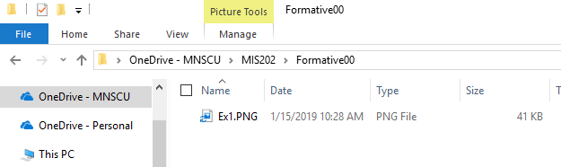

This assignment introduces fundamentally important concepts for completing the rest of this course. You will begin to develop a digital technology toolkit that will serve you well in your career.
After completing this assignment you will be able to:
You are expected to have a working knowledge of the following utilities. If you do not understand how to use an item, perform a Google Search, refer to the WSU Technology Knowledge Base, ask a teaching assistant, or ask the instructor:
StarID@go.minnstate.edu
It is essential that you know how to create folder structures to organize your work. You will use OneDrive to do this. If you do not have OneDrive installed and configured, before proceeding, refer to the resources in the Assignment Overview above. Some of your work will be stored on your laptop, such as screen shots to prove that you have accomplished certain tasks. During this course you will use File Explorer to create a series of folders in OneDrive with paths such as: ' ' OneDrive will look somewhat like the image below, but with the appropriate course:  OneDrive Folder You will be using this folder structure for organizing screen shots and other working documents throughout this course.
(10) 1. Make a screen shot of the folder that you just created in Finder. Save the screen shot as "Ex1" in your ' ' folder. It can be a .jpg, .png or other appropriate file format.
To succeed in this course, and in your career, It is essential that your computer (hardware and software) be functioning correctly.
Note- other in-depth testing and computer information may be available from tech support.
(10) 2. Make a screen shot of the 'Mac Software Update' window showing that your system is up to date. Save the screen shot as "Ex2" in your ' ' folder. It can be either a .jpg or .png file.
PgP 4/26/2022-For Informational Purposes
Note: you are welcome to use the multiple monitors in Somsen 301 or Somsen 329 whenever the rooms are available.
The MacBook Pro laptop can support two external monitors by using a CalDigit TS3+ USB-C Dock There are four of these located in the last aisle, furthest from the classroom door. Why are additional screens necessary? Some reasons:
To setup, use and disconnect an external monitor from your laptop follow the instructions below.
Note: With your mouse you can click and drag a window freely and smoothly between monitors that are correctly positioned. If you cannot do this, something is wrong.
When using LCD projectors or video conferencing screen sharing you can have a ‘public’ and ‘private’ display. The primary laptop display can be private, viewable only by the user. The external LCD monitor and the ceiling mounted LCD projector both display the same ‘public’ image. This allows the user to view class notes, email, Desire2Learn information privately on their laptop. Note that the user can still use their laptop and LCD projector to display the same image as is done now, and disregard the external LCD monitor. This is known as ‘mirroring’.
(10) 3. Make sure that you have content displayed in all three monitors. You can have a different website visible on each monitor. Then Make a screen shot of all three monitors.
Save the screen shot as "Ex3" in your ' ' folder.
Install the following software onto your computer
(10) 4. After installing all of the required software open Finder.
Make a screen shot showing Dreamweaver installed.
Save the screen shot as "Ex4" in your ' ' folder.
In your Zoom account, click the 'Profile' on the left side and view your profile. Make the window big enough to view at least the information shown below.
(25) 8. Use the Snipping Tool to make a screen shot of your profile.
Save the screen shot as "Ex5" in your ' ' folder.
This MUST be done while you are off-campus, or in Somsen 301 using the one network patch cable designated as 'VPN'. Using WSU wireless or WSU network connections such as Warrior or Wazoo will not work, but it may work if you use the WSU 'guest' wireless network. First read these instructions on connecting to the WSU VPN: https://learn.winona.edu/wiki/VPN Note: For additional assistance, and if the above hyperlink does not work, search the WSU website for "Cisco VPN"
(10) 7. Make sure to print the Cisco VPN Statistics file as 'Ex7.pdf'' and save it in the folder ' '
Publications:
To keep informed, you are strongly encouraged to read the many magazines available to you at no charge through Flipster. Through the Krueger Library, you have access to the online versions of The New York Times, The Wall Street Journal, and The Chronicle of Higher Education.
Instructions are below. If you have questions, please contact the Krueger Library.
New York Times:
1) Click on this link: https://libguides.winona.edu/az.php?a=n
2) Choose the third item in the list, “New York Times (Institutional Subscription”
3) For your username, use your StarID@winona.edu. Then choose a password and indicate that you are “Student”. Choose your graduation year.
StarID@winona.edu
4) You may also have access to the NYT app through WSU Apps.
*To subscribe, you must sign up on campus.*
(10) 8. After subscriping to the New York Times, login and take a screenshot of the current edition's home page using the Snipping tool.
Save the screen shot as "Ex8" in your ' ' folder.
Wall Street Journal
1) Click on this link: https://libguides.winona.edu/az.php?a=w
2) Enter your StarID and the password associated with your StarID
3) Follow the instructions and fill out the subscription form
4) Users with an existing account have the option to connect to the institutional subscription at the bottom of the “Create Account” page.
5) Repeat these steps every 180 days.
You may also have access to the WSJ app through WSU Apps.
(10) 9. After subscribing to the Wall Street Journal, login and take a screenshot of the front page using the Snipping tool.
Save the screen shot as "Ex8WSJ" in your ' ' folder.
The Krueger Library now has access to many popular titles (Business Week, Fast Company, Time, Newsweek, Entrepreneur and many more) on your laptop or iPad! To learn how to access these, please consult this library guide. https://libguides.winona.edu/c.php?g=611626&p=4247234
(10) 10. After accessing Flipster, open the latest issue of Wired magazine and take a screenshot of the cover using the Snipping tool.
Save the screen shot as "Ex8Flip" in your ' ' folder.
To proceed you must have Windows 10 installed, which includes 'Print to PDF' ; or Adobe Acrobat Professional installed, which will appear as "Adobe PDF " in the Print Dialog Box. Print dialog box
Refer to this url and follow these steps. https://www.howtogeek.com/248462/how-to-combine-images-into-one-pdf-file-in-windows/ You will be creating one .pdf (portable document format) file from the screen shots that you have taken, and the pdfs that you have generated.
(10) 11. Upload your file 'Formative00.pdf' to the D2L 'Formative00' Assignment folder.
Composing and sending clear, professional emails is an important skill to learn and master for your career. Google 'composing effective emails' and read some of the tips provided, such as these 10 tips found at the Seton Hill website. Then check your Outlook Email account to confirm that you have received a copy of this email. If you did not receive a confirming email, something is wrong, and you need to troubleshoot and resolve the problem. Explain to the student the need to press Submit and check that they received an email. Also that they need to upload any required files to the D2L Assignment Folder.
(10) 12. To complete this Exercise click this link and send a professional email to Professor Paulson stating that you have completed Exercise 9 of Assignment Formative00. Replace (course) in the subject line with the class you are in: MGMT353 Do not have any spaces in your subject line. The subject line must look something like this:
For this final Exercise, and to complete this assignment please read all of these instructions. Make sure that you have